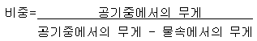
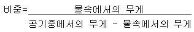
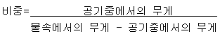
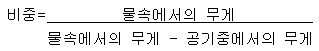
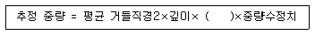

보석감정사(기능사) (2007-07-15 기출문제)
1과목: 보석학일반
1. 다이아몬드의 모조석으로 사용되기에 가장 적합하지 않은 것은?
- 합성 큐빅지르코니아
- 스트론튬 티타네이트
- 합성 모이써나이트
- 몰다바이트
(정답률: 87%)

2. 인성(Toughness)에 대한 설명 중 옳지 않은 것은?
- 인성이란 깨어짐이나 부서짐 같은 외부 충격에 견디는 능력을 말한다.
- 인성이 가장 높은 것은 다이아몬드이고 낮은 것은 오팔이다.
- 보석의 깨어짐은 벽개, 단구, 열 개 3가지로 나누어진다.
- 보석이 경도가 강하다고 인성이 좋은 것은 아니다.
(정답률: 98%)
3. 다음 중 중성세제로 세척하기에 가장 적합하지 않은 보석은?
- 진주
- 루비
- 비취
- 오팔
(정답률: 74%)
4. 진주의 화학성분 중 콘키올린의 작용으로 가장 적당한 것은?
- 탄산칼슘 조직을 결합시키는 접착제 역할
- 무지개 빛 효과
- 빛의 간섭과 분산 역할
- 조개껍질을 여닫는 내전근 역할
(정답률: 72%)
5. 천연보석과 외견상 유사하나 실제로 물리적, 화학적 성질이 천연보석과 전혀 다른 것의 총칭은?
- 합성석
- 모조석
- 처리석
- 천연석
(정답률: 98%)
6. 초크랄스키법으로 제조하는 합성보석이 아닌 것은?
- 합성 커런덤
- 합성 스피넬
- 합성 알렉산드라이트
- 합성 자수정
(정답률: 47%)
7. 품위의 각인을 12K로 한 상품에 포함된 순금의 함유량(%)으로 맞는 것은?
- 41.6
- 50
- 58.5
- 75
(정답률: 83%)
8. 3개의 결정축이 서로 직각으로 만나며 이들과 평행인 가로, 세로, 높이의 길이가 모두 다른 결정계는?
- 등축정계
- 사방정계
- 단사정계
- 정방정계
(정답률: 55%)
9. 다음 중 일정한 크기로 배열된 진주 목걸이의 명칭은?
- 그래듀에이션
- 스프랜더
- 유니폼
- 커버터블
(정답률: 81%)
10. 백색금은 어떤 금속을 모방하기 위해 개발되었는가?
- 금
- 은
- 백금
- 팔라듐
(정답률: 100%)
11. 천연과 합성오팔을 감별하는 방법으로 가장 올바른 것은?
- 색상으로 감별한다.
- 2.57 비중 용액에 담그어 분리해 낸다.
- 굴절률 검사로 구별해 낸다.
- 확대검사에서 벌집구조를 나타내는 가를 관측한다.
(정답률: 68%)
12. 보석의 조건으로 가장 거리가 먼 것은?
- 전통성이 있어야 한다.
- 희소성이 있어야 한다.
- 아름다운 색이 반드시 있어야 한다.
- 마모나 깨어짐에 견디는 능력이 있어야 한다.
(정답률: 94%)
13. 장신구 상품의 경제적 특성 중 사회적 거부효과에 대한 설명으로 가장 거리가 먼 것은?
- 스타일 변화가 역사적 연속성에 맞지 않을 때
- 변화의 폭이 너무 클 때
- 기능성이 낮거나 미적으로 열등할 때
- 구매가 동조나 경합의 이유에서 이루어질 때
(정답률: 100%)
14. 다음 중 보석과 내포물 특징이 올바르게 연결된 것은?
- 페리도트 - 수련잎 모양의 내포물
- 스피넬 - 흑색 반점상 내포물
- 다이옵사이드 - 기포
- 아이도크레이즈 - 말꼬리 형태의 내포물
(정답률: 72%)
15. 다음 중 월 별 탄생석의 연결이 잘못된 것은?
- 11월 - 토파즈
- 5월 - 에메랄드
- 2월 - 투어멀린
- 9월 - 블루사파이어
(정답률: 92%)
2과목: 다이아몬드감정법
16. 다음 중 보석의 비중을 계산하는 공식으로 맞는 것은?




(정답률: 95%)
17. 암석의 종류와 주 구성광물의 연결이 맞는 것은?
- 화강암 - 석영, 정장석, 사장석, 운모
- 섬록암 - 방해석, 운모
- 감람암 - 사장석
- 석회암 - 정장석
(정답률: 82%)
18. 다음 중 가열된 침(열침)을 대었을 때 석탄 타는 냄새가 나는 것은?
- 토파즈
- 코끼리 상아
- 제트
- 호박
(정답률: 93%)
19. 다음 중 작도(Plotting)의 목적에 대한 설명으로 틀린 것은?
- 다른 다이아몬드와 쉽게 식별해 낼 수 있는 근거가 된다.
- 감정할 당시의 다이아몬드의 상태와, 차후 어떤 손상이 생길 경우에 비교할 수 있는 근거자료가 된다.
- 클래러티 등급 구분의 증거가 된다.
- 색등급 구분의 증거가 된다.
(정답률: 93%)
20. 결정 성장의 뒤틀림이 집중된 작은 부분으로 실이나 핀포인트 같은 외관을 보일 수도 있는 인클루젼은?
- 그레인 센터(grain center)
- 인터널 그레이닝(internal graining)
- 레이저 드릴 홀(laser drill hole)
- 니들(needle)
(정답률: 75%)
21. 감정사가 10배 트리플릿 루페를 사용하여 다이아몬드를 감정하고 있다. 다이아몬드와 루페와의 거리가 얼마일 때 감정하기가 가장 용이한가?
- 약 0.5cm
- 약 1.5cm
- 약 2.5cm
- 약 3.5cm
(정답률: 59%)
22. 클래러티 등급 시스템에서 휘광성과 내구성은 물론 투명도까지 많은 영향을 미치는 명백한 인클루젼이 보이는 경우의 등급은?
- SI1
- I1
- VS2
- I3
(정답률: 70%)
23. 감별작업이 끝난 다이아몬드의 가치를 평가하기 위해 고려하는 사항이 아닌 것은?
- 투명도
- 색
- 커트
- 생산지
(정답률: 95%)
24. 다음은 라운드 브릴리언트 커트의 중량 추정 공식이다. ( )안에 들어갈 수치로 맞는 것은?

- 0.0⑤9
- 0.0061
- 0.0062
- 0.0083
(정답률: 93%)
25. 다이아몬드 클래러티 등급에서 인클루젼으로 간주되는 것은?
- 어브레이젼(abrasion)
- 스크래치(scratch)
- 페더(feather)
- 닉(nick)
(정답률: 94%)
26. 애크로매틱(achromatic) 렌즈를 올바르게 설명한 것은?
- 구면수차를 교정한 렌즈
- 두 개의 렌즈가 부착된 렌즈
- 색수차를 교정한 렌즈
- 구면수차와 색수차를 교정한 트리플릿
(정답률: 44%)
27. 다이아몬드의 컬러등급 구분 시 바닥 배경으로 가장 알맞은 색은?
- 무광택의 회색
- 광택있는 회색
- 광택있는 백색
- 무광택의 백색
(정답률: 95%)
28. 다음 중 라운드 브릴리언트의 주대칭성에 포함되는 항목으로만 구성되어 잇는 것은?
- C/oc, OR, T/G
- OR, WG, EF
- WG, EF, N
- EF, N, T/oct
(정답률: 98%)
29. 라운드 브릴리언트 커트에서 테이블의 반사상이 큐렛에서 테이블 코너까지의 거리의 1/3로 나타나는 다이아몬드의 퍼빌리언 깊이는?
- 47%
- 45%
- 43%
- 41%
(정답률: 91%)
30. 다이아몬드의 컬러 스케일에서 베리 라이트 옐로우(VERY LIGHT YELLOW)의 범위는?
- G ~ J
- K ~ M
- N ~ R
- S ~ Z
(정답률: 65%)
3과목: 보석감별법
31. 다이아몬드의 큐렛(culet)에 관한 설명 중 틀린 것은?
- 큐렛은 다이아몬드가 손상되지 않도록 보호하는 역할을 한다.
- 큐렛이 너무 크면 휘광성이 감소된다.
- 큐렛의 크기는 테이블을 통하여 5배 확대 하에서 목측으로 관찰한다.
- 큐렛은 다이아몬드의 퍼빌리언 메인 패싯들이 만나는 가장 아래 지점에 위치한다.
(정답률: 87%)
32. 마스터 스톤(비교석)의 조건으로 부적당한 것은?
- 41~45% 사이의 퍼빌리언 깊이
- 갈색 빛 띄는 체색
- 0.3~0.4ct 중량
- SI1 이상의 클래러티 등급
(정답률: 93%)
33. 천연 다이아몬드 색의 원인이 아닌 것은?
- 화학적인 불순물의 영향
- 결정구조의 변형에 의한 영향
- 천연적인 방사선에 의한 영향
- 열처리에 의항 영향
(정답률: 69%)
34. 연색된 흑진주를 확인하는데 적합한 용액은?
- MI용액
- 염산
- 질산
- 톨루엔
(정답률: 87%)
35. 다음 중 보석에 따라 나타나는 조흔색으로 틀린 것은?
- 헤마타이트 - 적색
- 라피스 라줄리 - 청색
- 말라카이트 - 백색
- 타이거즈 아이 - 황색
(정답률: 83%)
36. 다음 중 광택의 종류에 따른 보석의 연결로 맞는 것은?
- 아금강 광택 - 지르콘, 호박
- 유리광택 - 루비, 합성 큐빅 지르코니아
- 아유리 광택 - 오팔, 문스톤
- 왁스광택 - 헤마타이트, 터쿼이즈
(정답률: 72%)
37. 분광기의 스펙트럼에 짙은 수평선이 생기는 이유는?
- 시험석으로 빛이 반사되었을 때
- 슬릿이 많이 열려 있을 때
- 슬릿에 먼지가 쌓여 있을 때
- 투명하지 않은 시험석을 검사할 때
(정답률: 91%)
38. 다음 특수효과 중 오팔에서 가장 흔히 볼 수 있는 것은?
- 묘안효과
- 유색효과
- 변색효과
- 성채효과
(정답률: 77%)
39. 어떠한 비중액에 자수정 알을 넣었더니 천천히 가라 앉았다. 다음 중 어느 비중액인가?
- 3.32용액
- 3.⑤용액
- 2.67용액
- 2.62용액
(정답률: 37%)
40. 캐보션으로 연마된 보석의 굴절률을 측정하기 위하여 사용하는 곡면법의 종류가 아닌 것은?
- 확대법
- 50/50법
- 명멸법
- 평균법
(정답률: 89%)
41. 정수법을 비중을 측정할 때의 주의점으로 틀린 것은?
- 중량 측정시 쇠그물 고리가 비이커 내측에 닿게 한다.
- 보석 표면에 공기방울이 있으면 가볍게 두들겨 기포를 없앤다.
- 보석을 완전히 가라앉혀서 표면장력을 방지한다.
- 작은 보석은 상대오차가 커지므로 너무 작은 중량의 보석은 피한다.
(정답률: 83%)
42. 현재 사용 중인 굴절계의 굴절률이 정확한가를 검사하는데 이용되는 보석은?
- 루비(ruby)
- 에메랄드(emerald)
- 토파즈(topaz)
- 백수정(rock crystal)
(정답률: 86%)
43. 배율이 10배인 루페(Loupe)에 비하여 20배의 루페는 어떤 차이점이 있는가?
- 초점 거리가 더 짧다.
- 초점의 시야 폭이 더 넓다.
- 관찰 범위가 넓다.
- 초점의 거리가 2.5cm 이다.
(정답률: 92%)
44. 다음 중 편광기에 의한 검사에서 불스-아이가 관찰되는 보석은?
- 사파이어
- 수정
- 토파즈
- 에메랄드
(정답률: 70%)
45. 현미경 조명 중 커브선이나 투명성이 낮은 보석의 내포물을 관찰하는데 이용되는 조명은?
- 명시야 조명
- 수직조명
- 편광조명
- 암시야 조명
(정답률: 64%)
4과목: 보석가공기법
46. 보석감별법인 자성검사로 감별할 수 있는 보석의 종류로 맞는 것은?
- 헤마타이트와 모조 헤마타이트
- 스피넬과 합성 스피넬
- 진주와 모조 진주
- 에메랄드와 합성 에메랄드
(정답률: 90%)
47. 다음 중 장파 자외선에서 인광을 나타내는 보석은?
- 천연 화이트 오팔
- 합성 오팔
- 천연 루비
- 합성 루비
(정답률: 56%)
48. 다음 중 보석이 자외선, X선 또는 음극선에 노출되는 동안에만 빛을 발하는 현상을 나타내는 것은?
- 인광
- 형광
- 냉광
- 후광
(정답률: 90%)
49. 편광기의 다크포지션에서 투명한 보석을 360° 회전시키는 동안 어두운 상태로 있다면 이 보석은?
- 단굴절 보석
- 복굴절 보석
- 잠정질 보석
- 이상복굴절 보석
(정답률: 88%)
50. 일부 보석의 염색여부를 검사하기도 하며, 녹색과 적색의 일부분의 파장만을 통과시키는 성질을 이용한 기구로 주로 에메랄드의 구별에 많이 이용된 감별 기구는?
- 컬러필터
- 굴절계
- 이색경
- 편광기
(정답률: 97%)
51. 다음 중 편광기의 용도가 아닌 것은?
- 광학 특성(SR, ADR, DR, AGG) 검사
- 광학상 검사(1축성, 2축성)
- 다색성 검사
- 보석의 색을 스펙트럼 형태로 검사
(정답률: 74%)
52. 이중 캐보션(double cabochon)으로 연마하는 이유로 볼 수 없는 것은?
- 난집에 올려놓았을 때 잘 맞는다.
- 돌의 가장자리가 두껍게 되어 깨어질 염려가 없다.
- 투명석일 때에는 저면에서의 빛도 기대할 수 있다.
- 흠집을 제거할 수 없을 때 이용하는 커트 방법이다.
(정답률: 57%)
53. 다음 중 난발 난물림의 특징에 대한 설명으로 틀린 것은?
- 어떤 형태의 보석이라도 물릴 수 있다.
- 난발 자체로도 장식적인 효과가 있다.
- 보석의 효과를 최대한으로 낼 수 있으며, 섬세한 느낌을 준다.
- 옥, 청금석 등 불투명 보석에 주로 사용된다.
(정답률: 98%)
54. 다음 중 패싯 연마에 사용되는 커팅 연마판에 속하지 않는 것은?
- 벨트 샌더(belt sander)
- 루스 그릿(loose grit)
- 다이아몬드 연마판(diamond cutting laps)
- 다이아몬드 구리 연마판 (diamond charging copper laps)
(정답률: 44%)
55. 캐보션 형태의 천연보석을 광택 내는데 많이 사용되며 특히 비취에 적당한 광택제는?
- 산화크롬(chromic oxide)
- 산화세륨(cerium oxide)
- 산화제이철(ferric oxide)
- 실리콘 이산화물(silicon dioxide)
(정답률: 74%)
56. 큰 원석을 슬랩(slab) 형으로 절단하는데 사용되는 절단기이며, 톱날의 크기는 36인치, 24인치, 18인치, 16인치, 14인치, 12인치, 10인치, 9인치 등을 사용하는 것은?
- 대 절단기(slave sawing)
- 수직형 연마기(grinding)
- 수평현 연마기(lapping)
- 소 절단기(trim sawing)
(정답률: 87%)
57. 다음 중 표준 라운드 브릴리언트 형의 각 부분 패싯의 개수가 맞는 것은?
- 스타 패싯 = 16패싯
- 베즐 패싯 = 8패싯
- 퍼빌리언 메인 패싯 = 16패싯
- 로우어 거들 패싯 = 8패싯
(정답률: 72%)
58. 빛의 반사 결과에 의해서 생기는 특수 현상이 아닌 것은?
- 샤토얀시
- 아스테리즘
- 어벤츄린 효과
- 아둘라레센스
(정답률: 63%)
59. 다음 중 일반적인 옥가락지 제작 작업 공정 순서로 맞는 것은?
- 절단 - 그라인딩 - 천공 - 샌딩 - 광택
- 절단 - 천공 - 그라인딩 - 샌딩 - 광택
- 절단 - 그라인딩 - 샌딩 - 천공 - 광택
- 절단 - 천공 - 샌딩 - 그라인딩 - 광택
(정답률: 92%)
60. 다음 중 원형 구슬을 천공하는데 사용하는 장비로 가장 적합한 것은?
- 핸드피스
- 풀리풀러
- 지그
- 센터펀치
(정답률: 91%)